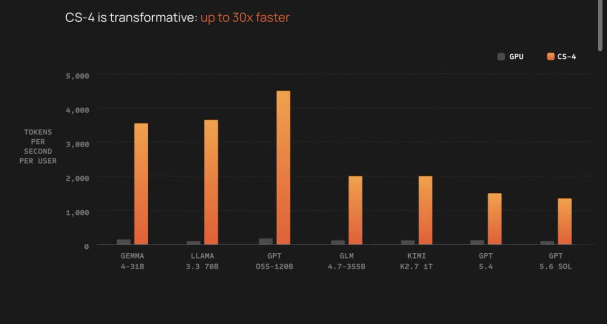

Wilf Lin
@Wilf_Lin
这会改变一切的。

Nick Dobos
@NickADobos
GPT 5.6 Sol at 1400 tokens/s
What the fuck???
Do y’all realize how fast this is?!
Blink and it’s done
For comparison, the “fast models”
Claude sonnet 5 is ~50-70
Gemini flash 3.7 is ~350
OpenAI’s smartest model about to be 4-25x faster than competitor’s dumbass models https://t.co/5bWbxoG8Zl https://t.co/IcF21Fiwh8
What the fuck???
Do y’all realize how fast this is?!
Blink and it’s done
For comparison, the “fast models”
Claude sonnet 5 is ~50-70
Gemini flash 3.7 is ~350
OpenAI’s smartest model about to be 4-25x faster than competitor’s dumbass models https://t.co/5bWbxoG8Zl https://t.co/IcF21Fiwh8